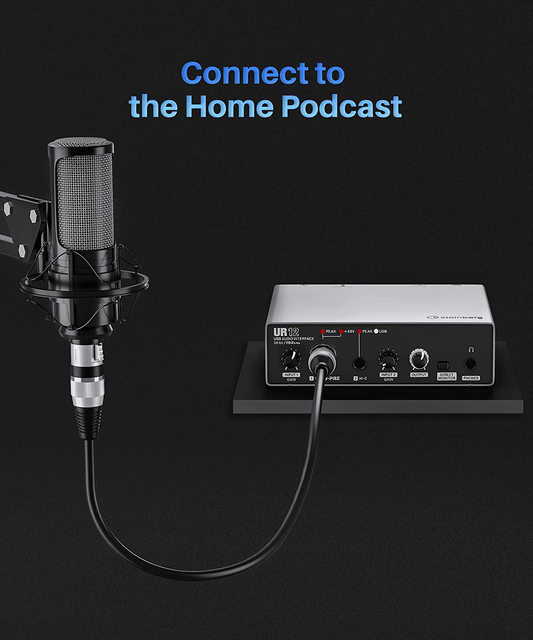
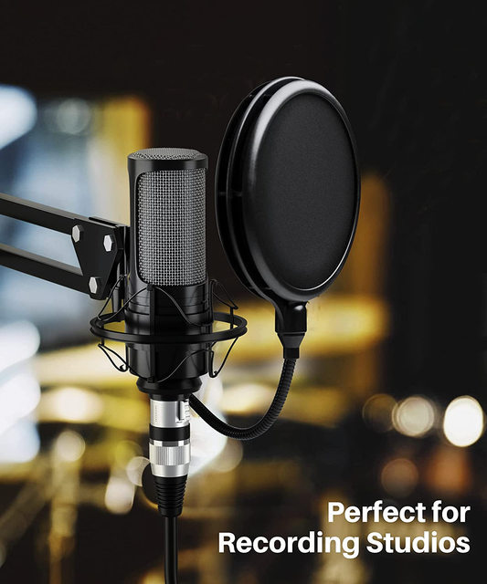
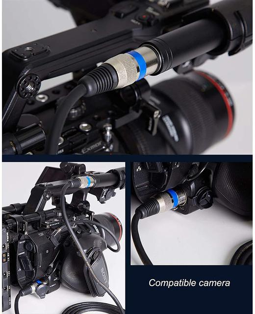
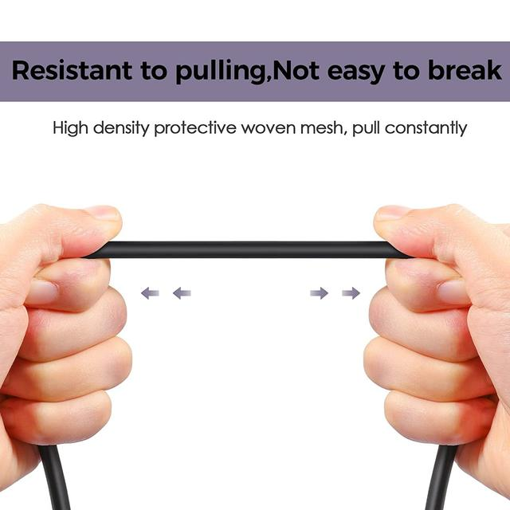
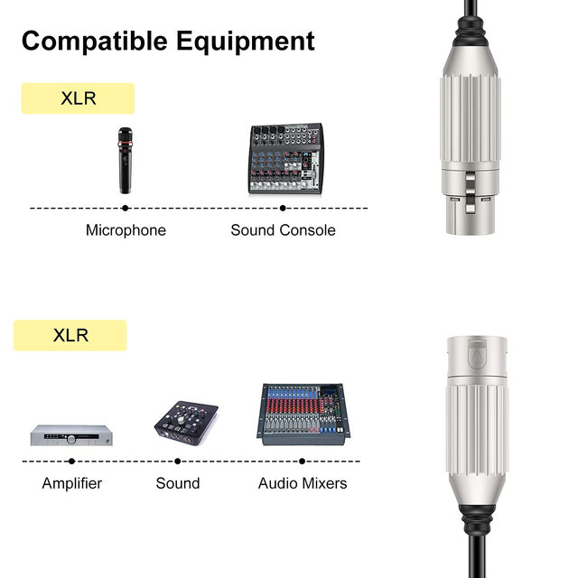
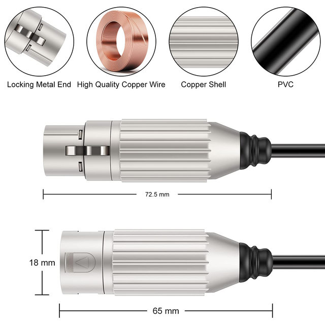

【OFC for High Fidelity Sound Quality】：
The XLR cable is made of twin 24AWG oxygen-free copper (OFC) conductors, covered with polyethylene insulation and three shielding layers for ensuring the maximum cancellation of noise. The oxygen-free copper that our XLR microphone cable use is a kind of premium conductive material that can accurately transmit the treble, medium, and bass and contains the function of enhancing signal and data transmission, aiming to deliver pristine and lossless sound.
【Three Shielding Layers for Lossless Sound Quality】：
Compared to other XLR MIC cords which only have single-layer shielding or no shielding, our XLR cables can be effective in shielding 99% of the clutter and static interference signals, eliminating noise, attaining the maximum cancellation of hum and ensuring high fidelity sound quality because the copper spiral shielding, aluminum foil shielding, and inner cotton yarn wrap shielding constitute the wire structure of this XLR microphone cable.
【Silver Plated Pins for Better Conductivity】：
The silver plated pins of this XLR cable help ensure transmission performance increased by 50% for perfect sound quality because of its low electrical resistance. What's more, the silver-plated pins, preventing oxidation and extending service life, show good performance for their durability and fast transmission. The fact that XLR cable with silver plated pins is more durable will prove that our product comes with a 100% satisfaction guarantee.
【Heavy Duty Metal Connectors】：
The self-locking metal connectors of this XLR microphone cable which is designed to stand up to a lot of wear and tear, have passed 5000+ plug-and-play tests, showing durability and sturdiness. With a flexible and thickened PVC jacket that provides a long service life, the self-locking connectors can ensure the device's connection is secure and our XLR patch cable proves to be reliable in the most demanding environments. It's great for music studios or live performances.
【Wide Application】：
This MIC cord is perfectly compatible with pieces of equipment with 3-pin connectors such as microphones, mixing boards, power amplifiers, studio harmonizers, speakers, patch bays and stage lighting, and so on. In addition, these XLR microphone cables are widely used as stage speakers, club stages, KTV, and home theater.
Connect to the Home Podcast

Perfect for Recording Studios

Compatible camera

Resistant to pulling,Not easy to break
High density protective woven mesh,pull constantly

Compatible Equipment
XLR Microphone,Sound Console,Amplifier,Sound,Audio Mixers

Locking Metal End,High Quality Copper Wire,Copper Shell,PVC
